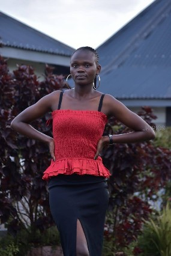

Personal Experience Contacts Hobbies
My name is Laura Blessed, a dedicated and passionate student currently pursuing a Bachelor of Science in Software Engineering. I was born and raised in Nakuru, Kenya and developed an early interest in computer and technology.
I have a strong background in mathematics and computer programming. I am passionate about software development and technology.
After completing my course, I hope to become a professional software engineer and contribute to innnovative technological solutions that make a meaningful impact in people's life. I also aspire to mentor young students interested in technology and eventually start my own startup.